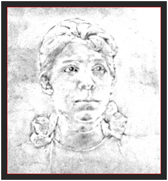

Vicentina Aranha
Início
História
A Vicentina Aranha
Atualmente
Galeria
Quem foi?
Dona Vicentina de Queirós Aranha foi uma dama da sociedade paulistana e era esposa de Olavo Egídio de Sousa Aranha, um cafeicultor e político representante do estado de São Paulo. O casal teve cinco filhos.

Sua idealização
Ela foi a idealizadora da construção de um local para o tratamento de tuberculosos, pois a a doença Tuberculose Pulmonar, conhecida como “peste cinzenta”, se alastrava por todo país. Então Vicentina conseguiu mobilizar a sociedade de São Paulo ao ponto de o governo começar a planejar a construção do local. Ela faleceu no ano de 1916, assim nunca viu seu sonho terminado e funcionando. Por conta de sua morte, foi homenageada no nome de sua idealização, que passou de Sanatório São José dos Campos para Sanatório Vicentina Aranha.
Informações:
Funcionamento: todos os dias, das 5h às 22h
Endereço: Rua Prudente M Moraes, 302 - Vila Adyana, São José dos Campos 12243-750
Telefone: (12) 3911-7090
E-mail: contato@pqvicentinaaranha.org.br